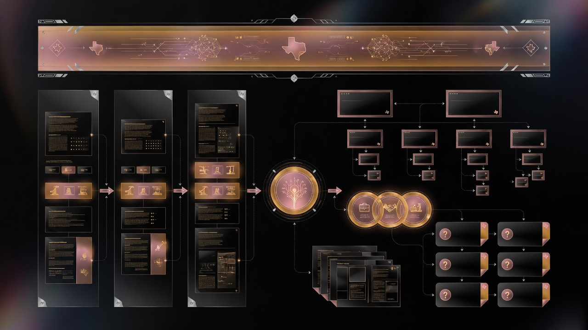

In this article
AI-first content architecture prepares Texas businesses for every search surface
Buyers no longer follow a linear path from Google query to blue link click. They encounter Map Pack results, AI Overviews, People Also Ask boxes, and generative assistants sometimes in one session. Your content architecture must serve all parsers: classic crawlers, local algorithms, and large language models.
TSBR builds AI-first content systems for Texas B2B clients: topic clusters, answer-first formatting, schema layers, and local proof woven into every silo. Mike Kaswatuka applies this architecture so companies become citable authorities, not thin brochure sites.
Topic clusters and silos
Organize content into four silos: services, locations, industries, and resources. Each service page links to relevant Texas city pages and industry use cases. Hub pages distribute authority to spokes.
Example: commercial HVAC service hub links to Katy location page, Houston energy corridor case study, and FAQ on emergency response SLAs.
Answer-first page structure
Every major page opens with a direct answer to the primary buyer question in two to three sentences. Follow with depth: process, proof, comparisons, timelines, and CTAs. AI Overviews extract the opening answer when confidence is high.
Local context on every page
Texas specificity is non-negotiable. Mention cities, counties, regional terminology, climate factors, and local regulations. Generic national copy fails local algorithms and AI trust checks.
Schema markup stack
- LocalBusiness on contact and location pages
- Service on commercial service pages
- FAQ on question-heavy pages
- Article on blog resources
- Organization sitewide with sameAs social profiles
Internal linking rules
Link location pages to services actually offered in that metro. Link case studies to matching service and city pages. Use descriptive anchor text with natural city and service terms. Avoid orphan pages with no inbound internal links.
E-E-A-T content modules
Include founder insight blocks, client metrics, certification lists, and dated update stamps on regulatory content. Show experience Texas buyers expect before issuing large POs.
| Page type | Required modules |
|---|---|
| Service | Answer intro, process, proof, FAQ, CTA |
| Location | Local intro, areas served, local proof, map |
| Case study | Challenge, solution, metrics, quote |
| Blog resource | TOC, tables, highlight boxes, internal links |
Sync with Google Business Profile

Website claims must match GMB services and cities. Post themes on Google should correspond to fresh site content. Split messaging confuses entity resolution.
Maintenance cadence
Review top pages quarterly. Update statistics, refresh project photos, add new FAQs from sales calls, and expand schema when Google adds supported types. Stale architecture decays like stale GMB profiles.
Outcomes for Texas clients
Clients combining AI-first architecture with GMB Velocity see faster Map Pack movement and earlier AI citations. Gulf Coast Commercial Construction and Lone Star Civil Engineering used this paired approach for multipliers in leads and RFP invitations.
Page templates that scale across Texas markets
Build reusable templates with mandatory modules: hero answer block, proof strip, service details, FAQ, CTA, and internal links. Customize city paragraphs and project examples per location. Templates accelerate rollout to new metros without thin duplicate content penalties.
Content briefs from buyer questions
Each brief starts with a buyer question, primary keyword, city modifiers, required proof points, schema type, and internal link targets. Writers and AI assistants follow briefs under human expert review. Brief-driven production keeps architecture coherent at scale.
Measuring architecture performance
Track indexation rate of new URLs, internal link click paths in analytics, rankings per silo, and assisted conversions from blog resources to contact pages. Architecture succeeds when authority flows to money pages, not when blog traffic spikes alone.
Migrating legacy sites without losing equity
Texas B2B sites often carry years of messy URLs. Map redirects carefully, consolidate thin pages into authoritative hubs, and update sitemaps. Launch citation and GMB alignment only after canonical structure stabilizes to avoid conflicting signals during migration.
Roles for ongoing architecture maintenance
- Strategist: silo map and keyword ownership
- Technical SEO: schema, speed, indexation
- Content lead: briefs and E-E-A-T review
- Sales liaison: quarterly question intake
Video and media in content architecture
Embed facility tours and project time-lapse videos on service and location pages. Transcribe videos with captions for accessibility and crawler parsing. Host on YouTube with optimized titles including Texas city and service terms, then schema-link from site.
Conversion paths without hurting architecture
Every silo terminates in clear CTAs: audit request, quote form, or phone call. Sticky headers on mobile for commercial buyers searching from job sites. Architecture serves revenue, not only rankings.
Example silo map for Texas contractor
Hub: commercial contracting Texas. Spokes: Dallas TI, Houston energy corridor buildouts, Austin tenant improvements, Fort Worth industrial renovation. Each spoke links to three case studies and one FAQ cluster. Internal links flow upward to hub and sideways to related trades.
Content governance documentation
Maintain a living content map spreadsheet: URL, primary keyword, silo, schema type, last updated, owner, and internal link count. Quarterly audits flag orphan pages, cannibalization, and stale statistics. Governance prevents architecture decay when sales launches new service lines or cities.
Version major page rewrites in change logs so AI systems and returning buyers see transparent update history on regulated or technical topics.
Production workflow for Texas B2B teams
Month one: architecture map and template approval. Month two: priority service and HQ city pages. Month three: secondary Texas metros. Month four: blog resources supporting each silo. Field teams upload project photos to shared folders weekly so content stays fresh without bottlenecking on marketing.
Legal reviews regulated claims before publish on engineering, medical B2B, and environmental pages. Compliance and SEO align when workflow is documented.
Future-proofing architecture for search evolution
New SERP features will emerge, but answer-first structured content with strong entities persists as the safest long-term bet. Invest in architecture that serves buyers and machines simultaneously. Texas B2B firms that own their narrative in search own more of their market margin.
Pair architecture with GMB Velocity and citation discipline for full-stack local dominance. TSBR implements all three layers for clients statewide from Arlington headquarters.
Precision Machine Works content lesson
Irving industrial clients rank faster when service pages mention tolerances, materials, industries served, and North Texas logistics advantages. Specificity beats generic manufacturing copy. Architecture should force specificity modules into every template so writers cannot publish thin pages by accident.
Schema deployment sequence
Deploy Organization schema site-wide first, then LocalBusiness on location pages, Service on commercial offer pages, and FAQ on support content. Validate each template before bulk publish. Broken schema wastes dev time and erodes trust signals. TSBR coordinates with your web developer or implements via CMS templates directly.
Revalidate after major CMS upgrades. Texas B2B sites on WordPress, Webflow, and custom stacks all require post-update schema checks.
Start with architecture, not blog spam
Random blog posts without silo planning create orphan URLs. Architecture first, volume second. Texas B2B sites win with fewer stronger pages tied to revenue services and cities. Every URL should have a defined job in the buyer journey and a parent silo that passes authority downstream to quote pages.
Content architecture audit
TSBR evaluates your sitemap, internal links, schema, and local depth in our free audit today at no obligation. Receive prioritized restructure recommendations for your Texas B2B site. Based in Arlington, serving statewide multi-metro accounts across DFW, Houston, Austin, San Antonio, and beyond.